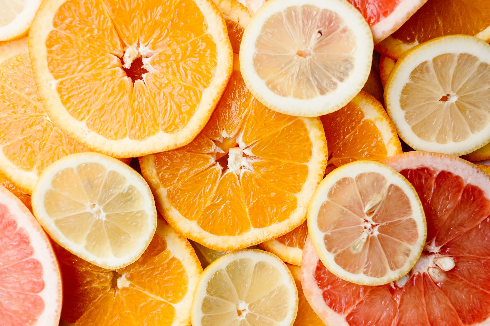

Цитрусовые
Цитрусовые (лат. Citrinae) — подтриба цветковых древесных растений семейства Рутовые (Rutaceae), входит в трибу Aurantieae подсемейства Померанцевые (Aurantioideae).
Самый известный представитель этой группы — род цитрус (Citrus), ряд видов которого (апельсин, грейпфрут, лимон, мандарин и некоторые другие) — широко распространённые садовые плодовые деревья, культивируемые в промышленных масштабах в странах с подходящим климатом; их плоды (гесперидии) ценятся за пищевые качества и являются важным экспортным товаром.
Согласно генетическим исследованиям, цитрусовые появились ок. 8 млн лет назад на северо-востоке Индии (в Ассаме), Мьянме и юго-восточном Китае. В процессе одомашнивания от цитрона и Citrus micrantha получили мексиканский лайм, от цитрона и кислого апельсина (Sour orange) — лимон. Скрещивание мандарина с помело привело к появлению апельсина и подвидов мандарина, гибридизация апельсина с помело привела к появлению грейпфрута.